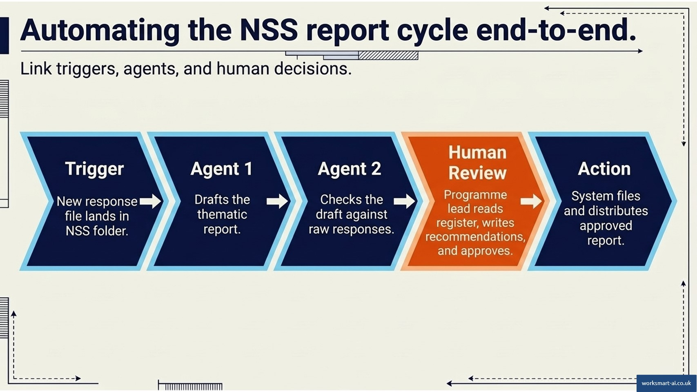
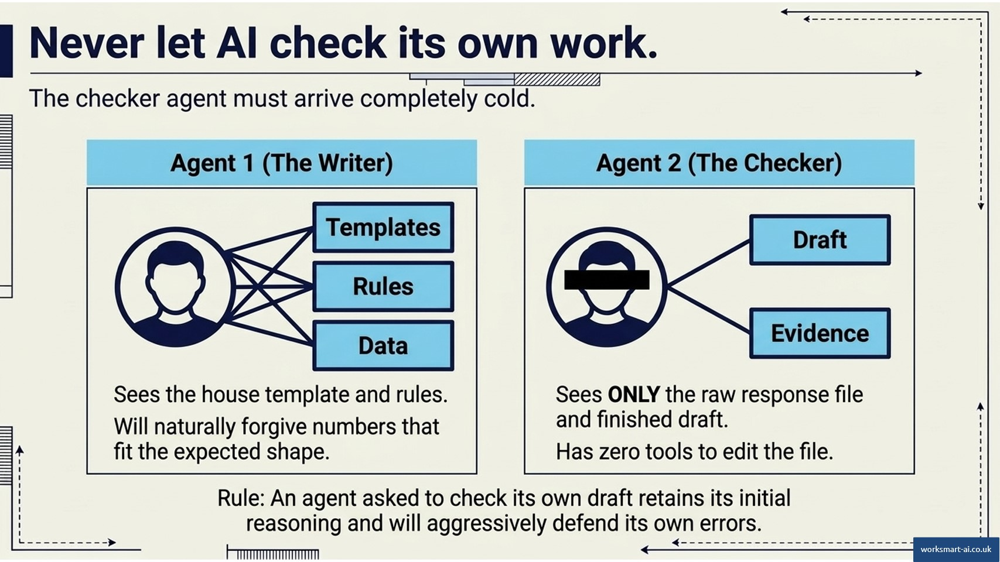
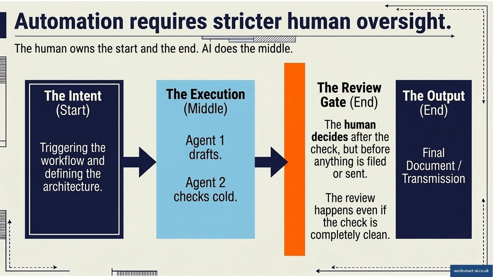
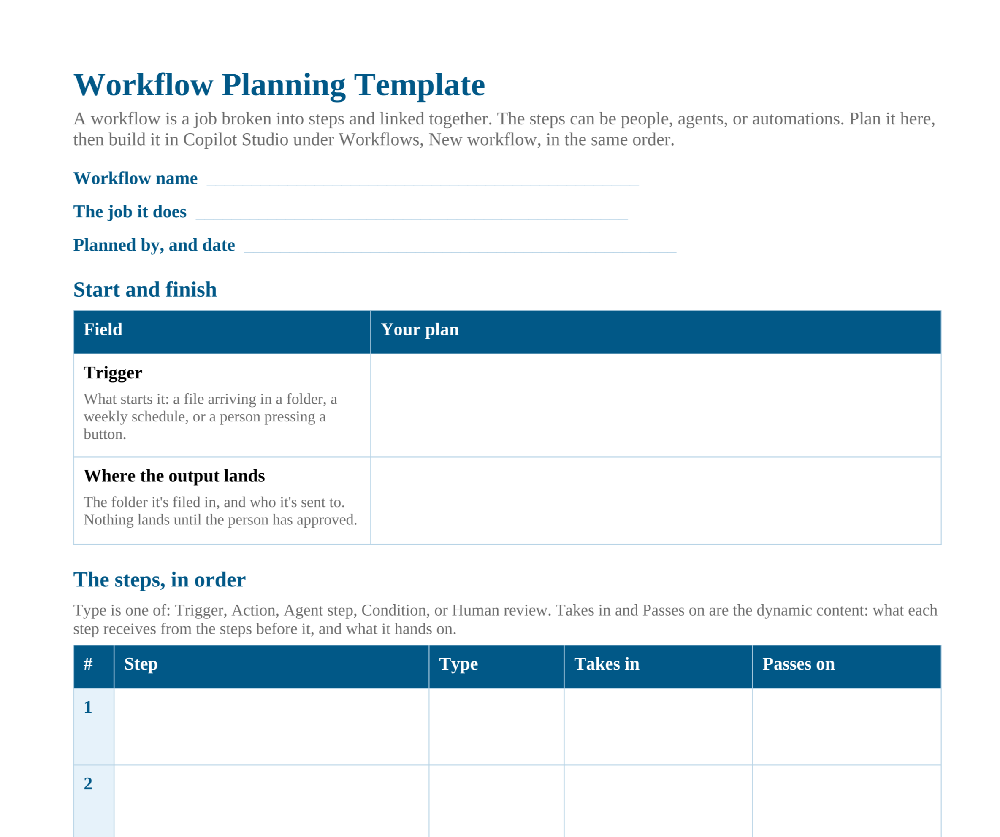

Module 5: Plan the workflow
Module 5: Plan the workflow
Estimated time: 9-10 minutes
Goal: Plan a workflow that chains two agents, actions, and a human decision, on the Workflow Planning Template.
From one agent to a chain
The NSS agent writes a good draft. Someone still has to check every number in it, decide what to recommend, file it, and send it on. Each of those is a step, and some of them shouldn’t be left to the agent that wrote the draft.
A workflow is “a job that you’ve broken into steps and linked together. Those steps can be people, agents, or automations.” The test from Module 1 still applies: a workflow has at least one step that isn’t an agent. Two agents in a row, with nothing between them, send the draft out unchecked.
The parts of a workflow
Every workflow has three kinds of step.
The trigger is what starts it: a file arriving in a folder, a weekly schedule, or a person pressing a button.
The steps do the work. There are three kinds:
- Actions do one fixed thing, the same way every run: get a file, create a document, send an email.
- Agent steps hand the language work to a published agent: draft the report, check the report.
- Decisions choose the path: a condition that branches on a result, or a human review where a named person approves or rejects.
Dynamic content is what passes between steps. The file from the trigger goes into the drafting agent. The draft goes into the checking agent. The approver’s answer decides what gets filed. Each step’s output becomes available to every step after it.
Activity: Match the workflow step to its type
Match the following:
Item | Match |
|---|---|
A new NSS response file lands in the Responses folder | Trigger |
The Programme Feedback Report agent drafts the report | Agent step |
If the checker found any mismatches, list them first | Condition |
The programme lead approves the report or sends it back | Human review |
The drafted report is passed into the checker’s message | Dynamic content |
The approved report is saved to the Reports folder | Action |
A second agent: The NSS checker
The NSS workflow needs a second agent, one that checks the draft rather than writing it. It’s planned on the same Agent Planning Template as the agent in Module 3, and built with the same steps as Module 4. Here’s the plan.
Field | Programme Feedback Report Checker |
|---|---|
Purpose | Trace every number and claim in a finished survey report back to the responses, and flag anything that can’t be traced |
Instructions | Read the report cold. One row per claim: traced, mismatched, or untraceable, with the evidence. Never correct the report |
Knowledge | The finished report and the response workbook. Not the house template, and not last year’s report |
Tools | None. It reports what it finds and changes nothing |
Skills | The claims register: one row per claim, its verdict, its evidence, and a count line to close |
Trigger | Called by the reporting workflow, once the report is drafted |
What a human checks | Everything marked mismatched or untraceable. The programme lead decides, not the agent |
Who can use it | The programme quality team. Not students, and not staff named in the responses |
Owner and review date | The Director of Education and Student Experience. Reviewed each September, before fieldwork opens |
Disclosure line | “Checked against the response file by an AI agent. Verdicts reviewed by the programme lead.” |
Two rows differ most from the writer’s plan.
Knowledge lists what the checker doesn’t get as well as what it does. A checker that sees the house template knows what shape the report should take, and starts forgiving numbers for fitting it. So it gets the evidence and nothing else.
Tools reads “none”, on purpose. The agent that judges shouldn’t also be the agent that acts. “None” is a decision, and the template asks for it to be written down so it isn’t made by default.
The NSS workflow, step by step
As a workflow, the NSS report has seven steps.
- Trigger: a new response file is created in the NSS Responses folder.
- Action: get the file’s content, and its modified date.
- Agent step: the Programme Feedback Report agent drafts the report.
- Agent step: the Programme Feedback Report Checker checks the draft against the response file, and returns its claims register.
- Condition: if the checker flagged anything, those rows go first in the review message.
- Human review: the programme lead reads the register and the report, approves or rejects, and writes the Recommendations section.
- Actions, if approved: file the report and its claims register side by side, send the report to its circulation list, and send the accessibility section separately to the Disability and Inclusion Service. If rejected, nothing is filed or sent.

The NSS workflow: a file lands, one agent drafts, a second checks, the programme lead decides, and only then is the report filed and sent.
Three design choices make it safe to run.
The checker is a separate agent. It gets the finished draft and the response file, and nothing from the writing. An agent asked to check its own draft still has its reasoning to hand, and defends the numbers it has just justified.
The agent that judges doesn’t act. The checker has no tools. It lists what it found and changes nothing. Filing and sending are actions, done by the workflow only after a person has approved.
The review happens even when the register is clean. The condition changes what the programme lead reads first. It doesn’t change whether they read it, and a clean register still goes to them for a decision.

Why the checker is a separate agent: the writer sees the template and rules, while the checker sees only the draft and the evidence.
The four jobs as workflows
Each of the Strategy Office jobs from Module 3 extends into a workflow with the same shape: one agent does the first job, a second does the next, and a person decides before anything leaves.
Job | Starts when | The second agent | The person decides |
|---|---|---|---|
Meeting actions tracker | The weekly schedule | Drafts a chase email to the owner of each overdue action | Each email: send as drafted, send with edits, or drop with a reason |
Scope and milestone extractor | A button, once the business case is approved | Checks the draft pack against the business case only | Each untraced item: supply the source, change it, or record it as a deliberate addition |
Admission cycle monitor | The weekly schedule | Drafts the commentary from the variance tables only, not the raw extracts | Whether the commentary claims anything the tables don’t show, and whether the comparison week is right |
Planning submission checker | A button, as each submission arrives | Drafts the challenge-meeting brief from confirmed exceptions | Which exceptions are real, which are unclear guidance, and which go to the meeting |
In every case the second agent is given less than the first: the tables and not the extracts, the draft and not the comparable pack. That stops it leaning on the material the first agent used.
Activity: Put the meeting actions workflow in order
Where the person goes
Human judgement belongs at the start and the end, with AI doing the middle. In a workflow, the end slice has a precise place: after the check, before anything is filed or sent.
A gate between the two agents, before the check has run, would let the approver sign off without ever seeing the register. A gate after sending comes too late to stop anything.

Where the person goes: after the check, and before anything is filed or sent.
The human review step in Copilot Studio has four rules worth planning around:
- The request arrives by Outlook email.
- It can’t be sent to anyone outside the University’s tenant.
- It collects up to five kinds of input: text, yes or no, email, number, and date. Use these to capture the decision, and the part only a person can write, such as the recommendations.
- The first person to respond decides. With several people assigned, whoever answers first decides for all of them. Assign one named person.
In the admission cycle workflow, where should the analyst’s review sit?
Plan your workflow
Just as you planned your agent, plan your workflow before you build it. Download the Workflow Planning Template and work through it in order.

The Workflow Planning Template, ready to fill in for your own workflow.
Start with what triggers it, such as a new NSS response file arriving in the Responses folder.
Then list the steps in order and say which agent does each one: the Programme Feedback Report agent drafts, and the checker reads the draft cold against the response file.
Mark the point where a person decides, and name that person and the decision they make: the programme lead reads the claims register, approves or rejects the report, and writes the Recommendations section.
Say what happens when the check fails, so a rejected report goes back and nothing is filed or sent.
Finish with where the output lands: the approved report and its register filed side by side, the report sent to its circulation list, and the accessibility section sent separately to where it needs to go.
Here’s the NSS workflow on the template.
Field | NSS Feedback Report Cycle |
|---|---|
The job it does | Drafts, checks, and files each programme’s NSS report, once the programme lead approves it |
Trigger | A new response file created in the NSS Responses folder |
Where the output lands | The report and its claims register side by side in the Reports folder, the report to its circulation list, and the accessibility section to the Disability and Inclusion Service. Nothing lands until the programme lead approves |
# | Step | Type | Takes in | Passes on |
|---|---|---|---|---|
1 | A new response file lands in the Responses folder | Trigger | - | The file |
2 | Get the file’s content | Action | The file | The responses |
3 | Draft the report | Agent step: Programme Feedback Report agent | The responses | The draft |
4 | Check the draft cold | Agent step: Programme Feedback Report Checker | The draft and the responses | The claims register |
5 | Put any flagged rows first | Condition | The claims register | The review message |
6 | Approve or reject, and write Recommendations | Human review: the programme lead | The draft and the review message | The decision and the Recommendations |
7 | If approved, file and send. If rejected, nothing is filed or sent | Action | The decision, the report, and the register | The filed report and register, and the emails |
Your turn: Plan the workflow for your own agent on the Workflow Planning Template: what starts it, the steps in order, which agent does which step, where the person decides and what they decide, what happens when the check fails, and where the output lands. If it needs a second agent, plan that agent on the Agent Planning Template first.